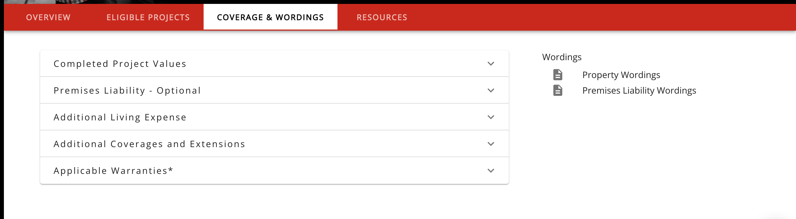

Experience
SOFTWARE DEVELOPER
APOLLO Insurance Solutions, Vancouver BC
Feb 2019 - Present
- Tech Stack: React, Redux, GraphQL, Node.js, AWS Services, Serverless, Hapi, Cypress, Jest
- Products: Online application system that handles the complete process of buying insurance: From selecting coverages and real-time pricing, to processing payment and instantly receiving policy documents in the email inbox. A portal for brokers to manage the life cycle of a policy: sales, endorsements, cancellations, extensions and renewals, as well as analytical and financial reporting.
- Was one of two developers to help build out the products during the company's early stages. Company now has over 100+ employees and a team of 15+ developers
- Build scalable React components that can support numerous features on the portal (i.e. single modal system that renders different UI based on the user’s requested action)
- Create new features as per stakeholder specs for the portal (i.e. transfer applications to other users on the portal, upload documents and attach to a specific policy)
- Build custom React components with responsive designs for application form
- Implement A/B testing using split.io and set up the foundation for end to end front end testing using Cypress
- Third party API integrations: Google Tag Manager, Google Analytics, Hubspot, Stripe
Sample Work and Projects

Tab UI to Display Product Details
React
- Scalable HOC tab system with a component library to render content on the panels
- Component library includes an accordion component that can recursively render other components from the same library
- System ingests a JSON DSL file that defines the number of tabs and component to render on each panel.


Education
LIGHTHOUSE LABS
Sept. 2018 - Nov 2018
- Certificate, Web Development Bootcamp
- Full-time immersive web development program
- Over 700 hours of programming experience
- Completion of full-stack projects
- Covers topics such as JavaScript, React, Node.js, MongoDB, PostgreSQL, jQuery, HTML, CSS, and SASS
DOUGLAS COLLEGE
Jan. 2018 - April 2018
- Completion of Document Design Course
- Introductory to the basic principles of two-dimensional design
- Balance and visual dynamics, layout, publication design, and typography
- Advanced Adobe InDesign Application
UNIVERSITY OF BRITISH COLUMBIA
Sept. 2008 - May 2013
- Bachelors of Science, Major in Chemistry
- Successful completion of Science Co-op Program
- President of the UBC Arts and Crafts Club
- UBC Imagine Day Orientation Leader for three consecutive years